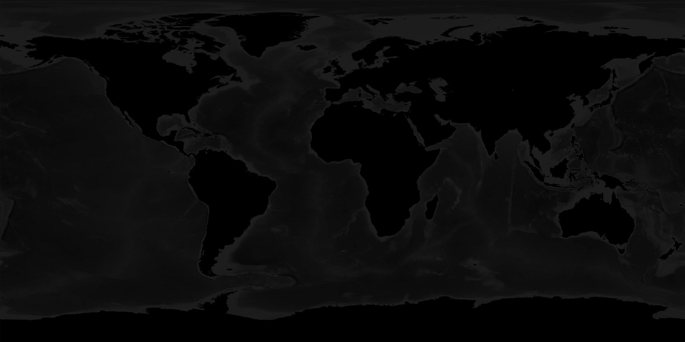
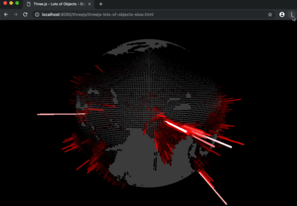
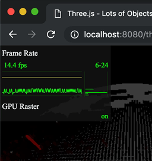

本文是有关 Three.js 的系列文章的一部分。第一篇文章 是three.js 基础知识。如果你还没有读过 然而，如果您是 Three.js 的新手，您可能需要考虑从那里开始。
有很多方法可以优化 three.js 的性能。其中一种方法通常被称为合并几何体。每一个你创建的Mesh都由 three.js 表示为 1 次或多次系统绘制请求。绘制两个东西的开销比绘制一个要大，即使结果相同，所以一种优化的方法是合并网格。
让我们展示一个例子，说明这是一个解决问题的好方法。让我们重新创建WebGL Globe。
我们首先需要做的是获取一些数据。WebGL Globe 说他们使用的数据来自 SEDAC。查看网站时，我看到有 网格格式的人口数据。 我以 60 分钟分辨率下载了数据。然后我查看了数据
它看起来像这样
ncols 360 nrows 145 xllcorner -180 yllcorner -60 cellsize 0.99999999999994 NODATA_value -9999 -9999 -9999 -9999 -9999 -9999 -9999 -9999 -9999 -9999 -9999 -9999 -9999 ... -9999 -9999 -9999 -9999 -9999 -9999 -9999 -9999 -9999 -9999 -9999 -9999 ... -9999 -9999 -9999 -9999 -9999 -9999 -9999 -9999 -9999 -9999 -9999 -9999 ... -9999 -9999 -9999 -9999 -9999 -9999 -9999 -9999 -9999 -9999 -9999 -9999 ... -9999 -9999 -9999 -9999 -9999 -9999 -9999 -9999 -9999 -9999 -9999 -9999 ... -9999 -9999 -9999 -9999 -9999 -9999 -9999 -9999 -9999 -9999 -9999 -9999 ... -9999 -9999 -9999 -9999 -9999 -9999 -9999 -9999 -9999 -9999 -9999 -9999 ... -9999 -9999 -9999 -9999 -9999 -9999 -9999 -9999 -9999 -9999 -9999 -9999 ... -9999 -9999 -9999 -9999 -9999 -9999 -9999 -9999 -9999 -9999 -9999 -9999 ... -9999 -9999 -9999 -9999 -9999 -9999 -9999 -9999 -9999 -9999 -9999 -9999 ... -9999 -9999 -9999 -9999 -9999 -9999 -9999 -9999 -9999 -9999 -9999 -9999 ... -9999 -9999 -9999 -9999 -9999 -9999 -9999 -9999 -9999 -9999 -9999 -9999 ... -9999 -9999 -9999 -9999 -9999 -9999 -9999 -9999 -9999 -9999 -9999 -9999 ... 9.241768 8.790958 2.095345 -9999 0.05114867 -9999 -9999 -9999 -9999 -999... 1.287993 0.4395509 -9999 -9999 -9999 -9999 -9999 -9999 -9999 -9999 -9999... -9999 -9999 -9999 -9999 -9999 -9999 -9999 -9999 -9999 -9999 -9999 -9999 ...
有几行像是键/值对，后面是每个网格点的值，每行对应每行数据点。
为了确保我们理解数据，让我们尝试将其绘制成二维图。
首先写一些加载文本文件的代码
async function loadFile(url) {
const res = await fetch(url);
return res.text();
}
上面的代码返回一个 Promise，其内容是 url 文件的内容；
然后我们需要一些代码来解析该文件
function parseData(text) {
const data = [];
const settings = {data};
let max;
let min;
// split into lines
text.split('\n').forEach((line) => {
// split the line by whitespace
const parts = line.trim().split(/\s+/);
if (parts.length === 2) {
// only 2 parts, must be a key/value pair
settings[parts[0]] = parseFloat(parts[1]);
} else if (parts.length > 2) {
// more than 2 parts, must be data
const values = parts.map((v) => {
const value = parseFloat(v);
if (value === settings.NODATA_value) {
return undefined;
}
max = Math.max(max === undefined ? value : max, value);
min = Math.min(min === undefined ? value : min, value);
return value;
});
data.push(values);
}
});
return Object.assign(settings, {min, max});
}
上面的代码返回一个对象，包含文件中的所有键/值对，以及一个 data 属性，其中包含一个大的数组中的所有数据，并且包含数据中找到的 min 和 max 值。
然后我们需要一些代码来绘制这些数据
function drawData(file) {
const {min, max, data} = file;
const range = max - min;
const ctx = document.querySelector('canvas').getContext('2d');
// make the canvas the same size as the data
ctx.canvas.width = ncols;
ctx.canvas.height = nrows;
// but display it double size so it's not too small
ctx.canvas.style.width = px(ncols * 2);
ctx.canvas.style.height = px(nrows * 2);
// fill the canvas to dark gray
ctx.fillStyle = '#444';
ctx.fillRect(0, 0, ctx.canvas.width, ctx.canvas.height);
// draw each data point
data.forEach((row, latNdx) => {
row.forEach((value, lonNdx) => {
if (value === undefined) {
return;
}
const amount = (value - min) / range;
const hue = 1;
const saturation = 1;
const lightness = amount;
ctx.fillStyle = hsl(hue, saturation, lightness);
ctx.fillRect(lonNdx, latNdx, 1, 1);
});
});
}
function px(v) {
return `${v | 0}px`;
}
function hsl(h, s, l) {
return `hsl(${h * 360 | 0},${s * 100 | 0}%,${l * 100 | 0}%)`;
}
最后将所有部分粘合在一起
loadFile('resources/data/gpw/gpw_v4_basic_demographic_characteristics_rev10_a000_014mt_2010_cntm_1_deg.asc')
.then(parseData)
.then(drawData);
得到如下结果
所以看起来是可行的。
让我们尝试在3D中实现它。从按需渲染的代码开始。我们将为文件中的每个数据制作一个盒子。
首先让我们制作一个带有世界纹理的简单球体。这是纹理

以及设置它的代码。
{
const loader = new THREE.TextureLoader();
const texture = loader.load('resources/images/world.jpg', render);
const geometry = new THREE.SphereGeometry(1, 64, 32);
const material = new THREE.MeshBasicMaterial({map: texture});
scene.add(new THREE.Mesh(geometry, material));
}
注意当纹理加载完成时调用 render。我们需要这样做，因为我们是按需渲染而不是连续渲染，所以需要在纹理加载完成时渲染一次。
然后我们需要修改上面为每个数据点绘制一个点的代码，改为为每个数据点制作一个盒子。
function addBoxes(file) {
const {min, max, data} = file;
const range = max - min;
// make one box geometry
const boxWidth = 1;
const boxHeight = 1;
const boxDepth = 1;
const geometry = new THREE.BoxGeometry(boxWidth, boxHeight, boxDepth);
// make it so it scales away from the positive Z axis
geometry.applyMatrix4(new THREE.Matrix4().makeTranslation(0, 0, 0.5));
// these helpers will make it easy to position the boxes
// We can rotate the lon helper on its Y axis to the longitude
const lonHelper = new THREE.Object3D();
scene.add(lonHelper);
// We rotate the latHelper on its X axis to the latitude
const latHelper = new THREE.Object3D();
lonHelper.add(latHelper);
// The position helper moves the object to the edge of the sphere
const positionHelper = new THREE.Object3D();
positionHelper.position.z = 1;
latHelper.add(positionHelper);
const lonFudge = Math.PI * .5;
const latFudge = Math.PI * -0.135;
data.forEach((row, latNdx) => {
row.forEach((value, lonNdx) => {
if (value === undefined) {
return;
}
const amount = (value - min) / range;
const material = new THREE.MeshBasicMaterial();
const hue = THREE.MathUtils.lerp(0.7, 0.3, amount);
const saturation = 1;
const lightness = THREE.MathUtils.lerp(0.1, 1.0, amount);
material.color.setHSL(hue, saturation, lightness);
const mesh = new THREE.Mesh(geometry, material);
scene.add(mesh);
// adjust the helpers to point to the latitude and longitude
lonHelper.rotation.y = THREE.MathUtils.degToRad(lonNdx + file.xllcorner) + lonFudge;
latHelper.rotation.x = THREE.MathUtils.degToRad(latNdx + file.yllcorner) + latFudge;
// use the world matrix of the position helper to
// position this mesh.
positionHelper.updateWorldMatrix(true, false);
mesh.applyMatrix4(positionHelper.matrixWorld);
mesh.scale.set(0.005, 0.005, THREE.MathUtils.lerp(0.01, 0.5, amount));
});
});
}
代码大部分直接来自我们的测试绘图代码。
我们创建一个立方体并调整它的中心，这样它会从正Z方向缩放。如果我们不这样做，它会从中心缩放，但我们希望它们从原点向外增长。
当然，我们也可以通过将立方体设置为更多THREE.Object3D对象的子对象来解决，就像我们在场景图中讲过的那样，但是我们在场景图中添加的节点越多，它运行得就越慢。
我们还设置了这个由lonHelper、latHelper和positionHelper组成的小型节点层次结构。我们使用这些对象来计算立方体在球体周围的位置。
上方的 绿条 表示 lonHelper，用于绕赤道方向旋转。蓝条 表示 latHelper，用于绕赤道上下方向旋转。红色球体 表示 positionHelper 提供的偏移量。
我们完全可以手动进行数学计算来确定地球上的位置，但采用这种方式可以将大部分数学运算交给库本身处理，我们就无需亲自处理。
对于每个数据点，我们创建一个MeshBasicMaterial和一个Mesh，然后我们获取positionHelper的世界矩阵，并将其应用到新的Mesh。最后我们在其新位置对网格进行缩放。
像上面一样，我们也可以为每个新盒子创建一个latHelper、lonHelper和positionHelper，但那样会更慢。
我们将要创建多达 360x145 个盒子。那大约有 52000 个盒子。由于一些数据点被标记为“NO_DATA”，我们实际要创建的盒子数量大约是 19000。如果我们每个盒子再增加 3 个辅助对象，那将有近 80000 个 THREE.js 需要计算位置的场景图节点。相反地，使用一组辅助对象来定位网格，我们可以节省大约 60000 次操作。
关于 lonFudge 和 latFudge 的说明。lonFudge 是 π/2，也就是四分之一圈。 这很有道理。这只是意味着纹理或纹理坐标从地球周围的不同偏移开始。另一方面，latFudge 我不知道为什么需要是 π * -0.135，那只是一个使盒子与纹理对齐的数值。
我们最后需要做的事情是调用我们的加载器
loadFile('resources/data/gpw/gpw_v4_basic_demographic_characteristics_rev10_a000_014mt_2010_cntm_1_deg.asc')
.then(parseData)
- .then(drawData)
+ .then(addBoxes)
+ .then(render);
一旦数据加载和解析完成，我们至少需要渲染一次，因为我们是在按需渲染。
如果你尝试通过拖动示例来旋转上面的示例，你可能会注意到它很慢。
我们可以通过打开开发者工具并开启浏览器的帧率计来检查帧率。

在我的电脑上，我看到的帧率不到20fps。

这让我感觉不太好，我怀疑许多人的机器更慢，这会让情况更糟。我们最好考虑进行优化。
对于这个特定问题，我们可以将所有盒子合并为一个几何体。目前我们大约在绘制19000个盒子。通过将它们合并为一个几何体，我们可以去掉18999个操作。
这是将盒子合并为单个几何体的新代码。
function addBoxes(file) {
const {min, max, data} = file;
const range = max - min;
- // make one box geometry
- const boxWidth = 1;
- const boxHeight = 1;
- const boxDepth = 1;
- const geometry = new THREE.BoxGeometry(boxWidth, boxHeight, boxDepth);
- // make it so it scales away from the positive Z axis
- geometry.applyMatrix4(new THREE.Matrix4().makeTranslation(0, 0, 0.5));
// these helpers will make it easy to position the boxes
// We can rotate the lon helper on its Y axis to the longitude
const lonHelper = new THREE.Object3D();
scene.add(lonHelper);
// We rotate the latHelper on its X axis to the latitude
const latHelper = new THREE.Object3D();
lonHelper.add(latHelper);
// The position helper moves the object to the edge of the sphere
const positionHelper = new THREE.Object3D();
positionHelper.position.z = 1;
latHelper.add(positionHelper);
+ // Used to move the center of the box so it scales from the position Z axis
+ const originHelper = new THREE.Object3D();
+ originHelper.position.z = 0.5;
+ positionHelper.add(originHelper);
const lonFudge = Math.PI * .5;
const latFudge = Math.PI * -0.135;
+ const geometries = [];
data.forEach((row, latNdx) => {
row.forEach((value, lonNdx) => {
if (value === undefined) {
return;
}
const amount = (value - min) / range;
- const material = new THREE.MeshBasicMaterial();
- const hue = THREE.MathUtils.lerp(0.7, 0.3, amount);
- const saturation = 1;
- const lightness = THREE.MathUtils.lerp(0.1, 1.0, amount);
- material.color.setHSL(hue, saturation, lightness);
- const mesh = new THREE.Mesh(geometry, material);
- scene.add(mesh);
+ const boxWidth = 1;
+ const boxHeight = 1;
+ const boxDepth = 1;
+ const geometry = new THREE.BoxGeometry(boxWidth, boxHeight, boxDepth);
// adjust the helpers to point to the latitude and longitude
lonHelper.rotation.y = THREE.MathUtils.degToRad(lonNdx + file.xllcorner) + lonFudge;
latHelper.rotation.x = THREE.MathUtils.degToRad(latNdx + file.yllcorner) + latFudge;
- // use the world matrix of the position helper to
- // position this mesh.
- positionHelper.updateWorldMatrix(true, false);
- mesh.applyMatrix4(positionHelper.matrixWorld);
-
- mesh.scale.set(0.005, 0.005, THREE.MathUtils.lerp(0.01, 0.5, amount));
+ // use the world matrix of the origin helper to
+ // position this geometry
+ positionHelper.scale.set(0.005, 0.005, THREE.MathUtils.lerp(0.01, 0.5, amount));
+ originHelper.updateWorldMatrix(true, false);
+ geometry.applyMatrix4(originHelper.matrixWorld);
+
+ geometries.push(geometry);
});
});
+ const mergedGeometry = BufferGeometryUtils.mergeGeometries(
+ geometries, false);
+ const material = new THREE.MeshBasicMaterial({color:'red'});
+ const mesh = new THREE.Mesh(mergedGeometry, material);
+ scene.add(mesh);
}
上面我们移除了改变盒子几何体中心点的代码，而是通过添加 originHelper 来实现。在此之前，我们使用相同的几何体 19000 次。这一次，我们为每个盒子创建新的几何体，并且既然我们打算使用 applyMatrix 来移动每个盒子几何体的顶点，我们不如只做一次而不是两次。
最后，我们将所有几何体的数组传递给 BufferGeometryUtils.mergeGeometries，它会将它们合并成一个单一的网格。
我们还需要包含 BufferGeometryUtils
import * as BufferGeometryUtils from 'three/addons/utils/BufferGeometryUtils.js';
现在，至少在我的机器上，我可以得到每秒 60 帧。
所以这个方法有效，但因为它是一个网格，我们只能得到一个材质，这意味着我们只能得到一种颜色，而之前每个盒子都有不同的颜色。我们可以通过使用顶点颜色来解决这个问题。
顶点颜色为每个顶点添加颜色。通过将每个盒子每个顶点的颜色设置为特定颜色，每个盒子都会有不同的颜色。
+const color = new THREE.Color();
const lonFudge = Math.PI * .5;
const latFudge = Math.PI * -0.135;
const geometries = [];
data.forEach((row, latNdx) => {
row.forEach((value, lonNdx) => {
if (value === undefined) {
return;
}
const amount = (value - min) / range;
const boxWidth = 1;
const boxHeight = 1;
const boxDepth = 1;
const geometry = new THREE.BoxGeometry(boxWidth, boxHeight, boxDepth);
// adjust the helpers to point to the latitude and longitude
lonHelper.rotation.y = THREE.MathUtils.degToRad(lonNdx + file.xllcorner) + lonFudge;
latHelper.rotation.x = THREE.MathUtils.degToRad(latNdx + file.yllcorner) + latFudge;
// use the world matrix of the origin helper to
// position this geometry
positionHelper.scale.set(0.005, 0.005, THREE.MathUtils.lerp(0.01, 0.5, amount));
originHelper.updateWorldMatrix(true, false);
geometry.applyMatrix4(originHelper.matrixWorld);
+ // compute a color
+ const hue = THREE.MathUtils.lerp(0.7, 0.3, amount);
+ const saturation = 1;
+ const lightness = THREE.MathUtils.lerp(0.4, 1.0, amount);
+ color.setHSL(hue, saturation, lightness);
+ // get the colors as an array of values from 0 to 255
+ const rgb = color.toArray().map(v => v * 255);
+
+ // make an array to store colors for each vertex
+ const numVerts = geometry.getAttribute('position').count;
+ const itemSize = 3; // r, g, b
+ const colors = new Uint8Array(itemSize * numVerts);
+
+ // copy the color into the colors array for each vertex
+ colors.forEach((v, ndx) => {
+ colors[ndx] = rgb[ndx % 3];
+ });
+
+ const normalized = true;
+ const colorAttrib = new THREE.BufferAttribute(colors, itemSize, normalized);
+ geometry.setAttribute('color', colorAttrib);
geometries.push(geometry);
});
});
上面的代码通过从几何体获取position属性来查找所需的顶点数量。然后我们创建一个Uint8Array来放置颜色。然后通过调用geometry.setAttribute将其添加为属性。
最后我们需要告诉three.js使用顶点颜色。
const mergedGeometry = BufferGeometryUtils.mergeGeometries(
geometries, false);
-const material = new THREE.MeshBasicMaterial({color:'red'});
+const material = new THREE.MeshBasicMaterial({
+ vertexColors: true,
+});
const mesh = new THREE.Mesh(mergedGeometry, material);
scene.add(mesh);
这样我们就可以重新获得颜色。
合并几何体是一种常见的优化技术。例如，与其使用 100 棵树，你可以将这些树合并成一个几何体，将一堆单独的岩石合并成一个岩石几何体，或者将篱笆的单独栅栏整合成一个篱笆网格。另一个例子是在 Minecraft 中，它不太可能单独绘制每个方块，而是创建合并方块的组，并选择性地移除永远不会被看到的面。
然而，将所有东西做成一个网格的问题是，之前分开的任何部分都不再容易移动。不过，取决于我们的使用场景，还是有创造性的解决方案。我们将在另一篇文章中探讨其中的一种。